Конденсаторы
Конденсатор — это электронный компонент для накопления заряда и энергии электрического поля. Конденсатор состоит из двух проводников в форме пластин (называемых обкладками), разделённых диэлектриком, толщина которого мала по сравнению с размерами обкладок (рис. 1). Роль конденсатора в электронной схеме заключается в накоплении электрического заряда, разделения постоянной и переменной составляющей тока, фильтрации пульсирующего тока и многое другое.
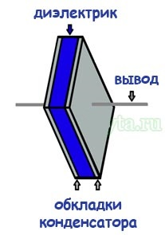
Рис. 1 - Модель конденсатора
Различают много видов конденсаторов и в основном они делятся по материалу самих обкладок и по виду используемого диэлектрика между ними. В зависимости от конструкции и назначения конденсатора диэлектриком может служить воздух, бумага, керамика, слюда.
Принцип действия конденсаторов основан на способности накапливать на обкладках электрические заряды при приложении между ними напряжения. Количественной мерой способности накапливать электрические заряды является емкость конденсатора.
В простейшем случае конденсатор представляет собой две металлические пластины, разделенные слоем диэлектрика. Емкость такого конденсатора (пФ) вычисляется по формуле:
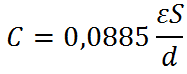
где ε - относительная диэлектрическая проницаемость диэлектрика (ε>1 ),
S - площадь обкладок конденсатора (см2),
d - расстояние между обкладками (см).
Конденсаторы широко используются в РЭА для самых различных целей. На их долю приходится примерно 25% всех элементов принципиальной схемы.
Конденсатор в цепи постоянного тока может проводить ток в момент включения его в цепь (происходит заряд или перезаряд конденсатора), по окончании переходного процесса ток через конденсатор не течёт, так как его обкладки разделены диэлектриком. В цепи же переменного тока он проводит колебания переменного тока посредством циклической перезарядки конденсатора, замыкаясь так называемым током смещения.
Свойство конденсатора сопротивляться переменному электрическому току называют емкостным (реактивным) сопротивлением конденсатора Xc. Реактивное сопротивление конденсатора связано с собственной ёмкостью и частотой тока формулой:
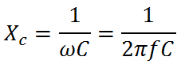
Сопротивление конденсатора (ёмкостное сопротивление) переменному току уменьшается с увеличением его ёмкости и частоты тока, и наоборот, увеличивается с уменьшением его ёмкости и частоты тока.
Классификация конденсаторов
По виду диэлектрика различают:
- Конденсаторы вакуумные (обкладки без диэлектрика находятся в вакууме).
- Конденсаторы с газообразным диэлектриком.
- Конденсаторы с жидким диэлектриком.
- Конденсаторы с твёрдым неорганическим диэлектриком: стеклянные (стеклоэмалевые, стеклокерамические, стеклоплёночные), слюдяные, керамические, тонкослойные из неорганических плёнок.
- Конденсаторы с твёрдым органическим диэлектриком: бумажные, металлобумажные, плёночные, комбинированные — бумажноплёночные, тонкослойные из органических синтетических плёнок.
- Электролитические и оксидно-полупроводниковые конденсаторы. В качестве диэлектрика используется оксидный слой на металлическом аноде. Анод изготовляется, в зависимости от типа конденсатора, из алюминиевой, ниобиевой или танталовой фольги или спечённого порошка. Вторая обкладка (катод) - электролит (в электролитических конденсаторах), или слой полупроводника (в оксидно-полупроводниковых), нанесённый непосредственно на оксидный слой. Емкость их намного больше, чем у обычных, следовательно, габариты также существенно больше.
Отличительная особенность электролитических конденсаторов – полярность. Если обычные конденсаторы можно впаивать в схему не беспокоясь о полярности прикладываемого к конденсатору напряжения, то электролитический конденсатор необходимо включать в схему строго в соответствии с полярностью напряжения. У электролитических конденсаторов один вывод плюсовой, другой минусовой.
Кроме того, конденсаторы различаются по возможности изменения своей ёмкости:
- Постоянные конденсаторы — основной класс конденсаторов, не меняющие своей ёмкости (кроме как в течение срока службы).
- Переменные конденсаторы — конденсаторы, которые допускают изменение ёмкости в процессе функционирования аппаратуры. Управление ёмкостью может осуществляться механически, электрическим напряжением (вариконды, варикапы) и температурой (термоконденсаторы). Применяются, например, в радиоприёмниках для перестройки частоты резонансного контура.
- Подстроечные конденсаторы — конденсаторы, ёмкость которых изменяется при разовой или периодической регулировке и не изменяется в процессе функционирования аппаратуры. Их используют для подстройки и выравнивания начальных ёмкостей сопрягаемых контуров, для периодической подстройки и регулировки цепей схем, где требуется незначительное изменение ёмкости.
В зависимости от назначения: конденсаторы общего и специального назначения. Конденсаторы общего назначения используются практически в большинстве видов и классов аппаратуры (низковольтные конденсаторы, к которым не предъявляются особые требования). Специальные: высоковольтные, импульсные, помехоподавляющие, дозиметрические, пусковые и другие конденсаторы.
Условные графические обозначения конденсаторов в электрических схемах
Таблица 1
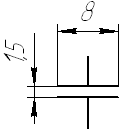 |
Конденсатор постоянной емкости, общее обозначение |
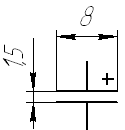 |
Конденсатор оксидный (электрлитический) полярный |
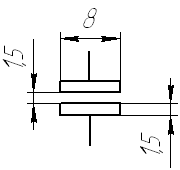 |
Конденсатор оксидный неполярный |
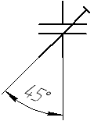 |
Конденсатор подстроечный |
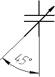 |
Конденсатор переменной емкости |
На электрических принципиальных схемах конденсаторы обозначаются латинской буквой С. Далее идет число, указывающее порядковый номер конденсатора в схеме (например С26), и указывается величина емкости. Около подстроечных и переменных конденсаторов указывается минимальная и максимальная емкости. Например, обозначения 5...25 означают, что емкость изменяется от 5 до 25 пикофарад.
- При ёмкости не более 0,01 мкФ, номинальная ёмкость конденсатора указывают в пикофарадах, при этом допустимо не указывать единицу измерения, то есть обозначение «пФ» опускают.
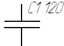
- конденсатор с номинальной емкостью 120 пФ. - При обозначении номинала ёмкости в других единицах указывают единицу измерения.
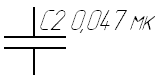
- конденсатор с номинальной емкостью 0,047 мкФ (47 нФ). - Для электролитических конденсаторов, а также для высоковольтных конденсаторов на схемах, после обозначения номинала ёмкости, указывают их максимальное рабочее напряжение в вольтах (В) или киловольтах (кВ). Например так: «10 мк×10 В».
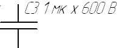
- конденсатор с номинальной емкостью1 мкФ и максимальным рабочим напряжением 600 В. 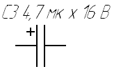
- электролитический конденсатор (полярный) с номинальной емкостью 4,7 мкФ и максимальным рабочим напряжением 16 В. 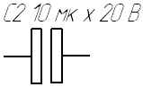
- электролитический конденсатор (неполярный) с номинальной емкостью 10 мкФ и максимальным рабочим напряжением 20 В. - Для переменных конденсаторов указывают диапазон изменения ёмкости, например так: «10...180».
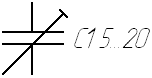
- подстроечный конденсатор с диапазоном изменения емкости от 5 пФ до 20 пФ. 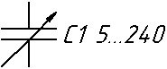
- конденсатор переменной емкости с диапазоном изменения емкости от 5 пФ до 240 пФ.
Основные параметры конденсатора
Основными параметрами являются емкость и рабочее напряжение. Кроме того, свойства конденсаторов характеризуются рядом паразитных параметров.
Номинальная емкость Сном и допустимое отклонение от номинала ±ΔС. Номинальные значения емкости Сном высокочастотных конденсаторов так же как и номинальные значения сопротивлений стандартизированы и определяются рядами Е6, Е12, Е24 и т.д. Номинальные значения емкости электролитических конденсаторов определяются рядом: 0,5; 1; 2; 5; 10; 20; 30;50; 100; 200; 300; 500; 1000; 2000:5000 мкф.
Номинальные значения емкости бумажных пленочных конденсаторов определяются рядом: 0,5; 0,25; 0,5; 1; 2; 4; 6; 8; 20; 20; 40; 60; 80; 100; 200;400; 600; 800; 1000 мкф.
По отклонению от номинала конденсаторы разделяются на классы (табл. 2).
Таблица 2
| Класс | 0,01 | 0,02 | 0,05 | 00 | 0 | I | II | III | IV | V | VI |
| Допуск, % | ±0,1 | ±0,2 | ±0,5 | ±1 | ±2 | ±5 | ±10 | ±20 | -10 +20 |
-20 +30 |
-20 +50 |
Конденсаторы I, II, и III классов точности являются конденсаторами широкого применения и соответствуют рядам Е24, Е12 и Е6.
В зависимости от назначения в РЭА применяют конденсаторы различных классов точности. Блокировочные и разделительные конденсаторы обычно выбирают по II и III классам точности, контурные конденсаторы обычно имеют 1,0 или 00 классы точности, а фильтровые - IV, V и VI классы точности.
Электрическая прочность конденсаторов характеризуется величиной напряжения пробоя и зависит в основном от изоляционных свойств диэлектрика. Все конденсаторы в процессе изготовления подвергаются воздействию испытательного напряжения в течении 2 - 5 с. В технической документации указывается номинальное напряжение, т.е. такое максимальное напряжение, при котором конденсатор может работать длительное время при соблюдении условий, указанных в технической документации. Для повышения надежности РЭА конденсаторы используют при напряжении, которое меньше номинального.
Стабильность емкости определяется ее изменением под воздействием внешних факторов. Наибольшее влияние на величину емкости оказывает температура. Ее влияние оценивается температурным коэффициентом емкости (ТКЕ):
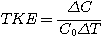
Изменение емкости обусловлено изменением диэлектрической проницаемости диэлектрика, изменением линейных размеров обкладок конденсатора и диэлектрика.
В основном же изменение емкости вызывается изменением диэлектрической проницаемости.
У высокочастотных конденсаторов величина ТКЕ не зависит от температуры и указывается на корпусе конденсатора путем окраски корпуса в определенный цвет и нанесения цветной метки.
У низкочастотных конденсаторов температурная зависимость емкости носит нелинейный характер. Температурная стабильность этих конденсаторов оценивается величиной предельного отклонения емкости при крайних значениях температуры. Низкочастотные конденсаторы разделены на три группы по величине температурной нестабильности: Н20 - ±20%; НЗО - ±30%; Н90 - (+50 -90)%.
Стабильность конденсаторов во времени характеризуется коэффициентом старения
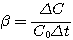
Потери энергии в конденсаторах обусловлены электропроводностью и поляризацией диэлектрика и характеризуются тангенсом угла диэлектрических потерь tgδ. Конденсаторы с керамическим диэлектриком имеют tgδ > 10-4, конденсаторы со слюдяным диэлектриком - 10-4, с бумажным - 0,01-0,02, с оксидным-0,1-1,0.
Конструкции конденсаторов
По назначению конденсаторы делятся на конденсаторы общего назначения и специального назначения. Конденсаторы общего назначения делятся на низкочастотные и высокочастотные. К конденсаторам специального назначения относятся высоковольтные, помехоподавляющие, импульсные, дозиметрические, конденсаторы с электрически управляемой емкостью (варикапы, вариконды) и др.
По назначению конденсаторы подразделяются на контурные, разделительные, блокировочные, фильтровые и т.д., а по характеру изменения емкости на постоянные, переменные и полупеременные (подстроечные).
По материалу диэлектрика различают три вида конденсаторов: с твердым, газообразным и жидким диэлектриком. Конденсаторы с твердым диэлектриком делятся на керамические, стеклянные, стеклокерамические, стеклоэмале-вые, слюдяные, бумажные, электролитические, полистирольные, фторопластовые и др.
По способу крепления различают конденсаторы для навесного и печатного монтажа, для микромодулей и микросхем.
Конденсаторы гибридных ИМС представляют собой трехслойную структуру: на подложку наносится металлическая пленка, затем диэлектрическая пленка и снова металлическая пленка. В качестве конденсаторов полупроводниковых ИМС может использоваться один из электронно-дырочных переходов транзистора или МДП-структура: роль нижней обкладки выполняет подложка (П), роль диэлектрика (Д) выполняет слой окиси кремния SiO2 и роль верхней обкладки конденсатора выполняет металлическая пленка (М).
Пакетная конструкция
Она применяется в слюдяных, стеклоэмалевых, стеклокерамических и некоторых типах керамических конденсаторов и представляет собой пакет диэлектрических пластин (слюды) 1 толщиной около 0,04 мм, на которые напылены металлизированные обкладки 2, соединяемые в общий контакт полосками фольги 3 (рис. 2). Собранный пакет спрессовывается обжимами 4, к которым присоединяются гибкие выводы 5, и покрывается влагозащитной эмалью. Количество пластин в пакете достигает 100.
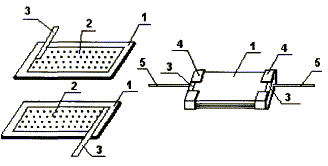
Рис. 2 - Пакетная конструкция конденсатора
Емкость такого конденсатора зависит от числа пластин в пакете (в пФ) рассчитывается по формуле:
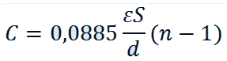
Трубчатая конструкция
Она характерна для высокочастотных трубчатых конденсаторов и представляет собой керамическую трубку 1 с толщиной стенок около 0,25 мм, на внутреннюю и внешнюю поверхность которой методом вжигания нанесены серебряные обкладки 2 и 3. Для присоединения гибких проволочных выводов 4 внутреннюю обкладку выводят на внешнюю поверхность трубки и создают между ней и внешней обкладкой изолирующий поясок 5, снаружи на трубку наносится защитная пленка из изоляционного вещества.
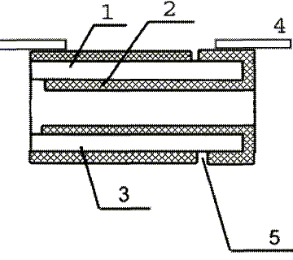
Рис. 3 - Трубчатая конструкция конденсатора
Емкость такого конденсатора
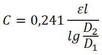
где l - длина перекрывающейся части обкладок в см,
D1 и D2 - наружный и внешний диаметры трубки
Дисковая конструкция
Эта конструкция (рис. 4) характерна для высокочастотных керамических конденсаторов: на керамический диск I с двух сторон вжигаются серебряные обкладки 2 и 3, к которым присоединяются гибкие выводы 4.
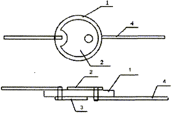
Рис. 4 - Дисковая конструкция конденсатора
Литая секционированная конструкция.
Эта конструкция характерна для монолитных многослойных керамических конденсаторов (рис. 5), получивших в последние годы широкое распространение, в том числе в аппаратуре с ИМС.
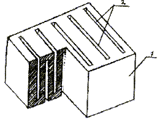
Рис. 5 - Литая секционированная конструкция конденсатора
Такие конденсаторы изготовляют путем литья горячей керамики, в результате которого получают керамическую заготовку 1 с толщиной стенок около 100 мкм и прорезями (пазами) 2 между ними, толщина которых порядка 130-150 мкм. Затем эта заготовка окунается в серебряную пасту, которая заполняет пазы, после чего осуществляют вжигание серебра в керамику.
В результате образуются две группы серебряных пластин, расположенных в пазах керамической заготовки, к которым припаиваются гибкие выводы. Снаружи вся структура покрывается защитной пленкой. В конденсаторах, предназначенных для установки в гибридных ИМС, гибкие выводы отсутствуют, они содержат торцевые контактные поверхности, которые присоединяются к контактным площадкам ГИС.
Рулонная конструкция
Эта конструкция (рис. 6) характерна для бумажных пленочных низкочастотных конденсаторов, обладающих большой емкостью. Бумажный конденсатор образуется путем свертывания в рулон бумажной ленты 1 толщиной около 5-6 мкм и ленты из металлической фольги 2 толщиной около 10-20 мкм. В металлобумажных конденсаторах вместо фольги применяется тонкая металлическая пленка толщиной менее 1 мкм, нанесенная на бумажную ленту.
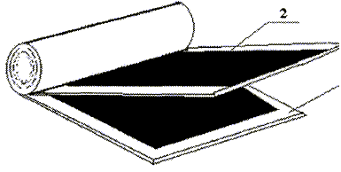
Рис. 5 - Рулонная конструкция конденсатора
Рулон из чередующихся слоев металла и бумаги не обладает механической жесткостью и прочностью, поэтому он размещается в металлическом корпусе, являющемся механической основой конструкции.
Емкость таких конденсаторов
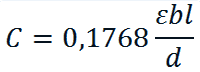
где
b - ширина ленты,
l - длина ленты,
d - толщина бумаги.
Емкость бумажных конденсаторов достигает 10 мкф, а металлобумажных 30 мкф.
Система обозначений и маркировка конденсаторов
В настоящее время принята система обозначений конденсаторов постоянной емкости, состоящая из ряда элементов: на первом месте стоит буква К, на втором месте -двухзначное число, первая цифра которого характеризует тип диэлектрика, а вторая - особенности диэлектрика или эксплуатации (табл. 3), затем через дефис ставится порядковый номер разработки.
Например, обозначение К 10-17 означает керамический низковольтный конденсатор с 17 порядковым номером разработки. Кроме того, применяются обозначения, указывающие конструктивные особенности:
- КСО - конденсатор слюдяной спрессованный,
- КЛГ - конденсатор литой герметизированный,
- КТ -керамический трубчатый
- и т. д.
Подстроечные конденсаторы обозначаются буквами КТ, переменные -буквами К П. Затем следует цифра, указывающая тип диэлектрика:
1 - вакуумные;
2 - воздушные;
3 - газонаполненные;
4 - твердый диэлектрик;
5 - жидкий диэлектрик.
В конструкторской документации помимо типа конденсатора указывается величина емкости, рабочее напряжение и ряд других параметров. Например, обозначение КП2 означает конденсатор переменной емкости с воздушным диэлектриком, а обозначение КТ4 - подстроечный конденсатор с твердым диэлектриком.
Таблица 3
| Обозначение | Тип конденсатора | Обозначение | Тип конденсатора |
|---|---|---|---|
| К10 | Керамический, низковольтный (Uраб<1600B) |
К50 | Электролитический, фольговый, Алюминиевый |
| К15 | Керамический, высоковольтный (Uраб>1600B) |
К51 | Электролитический, фольговый, танталовый,ниобиевый и др. |
| К20 | Кварцевый | К52 | Электролитический, объемно-пористый |
| К21 | Стеклянный | К53 | Оксидно-полупроводниковый |
| К22 | Стеклокерамический | К54 | Оксидно-металлический |
| К23 | Стеклоэмалевый | К60 | С воздушным диэлектриком |
| К31 | Слюдяной малой мощности | К61 | Вакуумный |
| К32 | Слюдяной большой мощности | К71 | Пленочный полистирольный |
| К40 | Бумажный низковольтный (Uраб<2 кB) с фольговыми обкладками | К72 | Пленочный фторопластовый |
| К73 | Пленочный полиэтилентереф-талатный | ||
| К41 | Бумажный высоковольтный(Uраб>2 kB) с фольговыми обкладками | К75 | Пленочный комбинированный |
| К76 | Лакопленочный | ||
| К42 | Бумажный с металлизированными Обкладками | К77 | Пленочный, Поликарбонатный |
На корпусе конденсатора указываются его основные параметры. В малогабаритных конденсаторах применяется сокращенная буквенно-кодовая маркировка.
При емкости конденсатора менее 100 пФ ставится буква П. Например, 33П означает, что емкость конденсатора 33 пф. Если емкость лежит в пределах от 100 пф до 0,1 мкф, то ставится буква Н (нанофарада). Например, 10Н означает емкость в 10 нф или 10 000 пф. При емкости более 0,1 мкф ставится буква М, например, 10М означает емкость в 10 мкф. Слитно с обозначением емкости указывается буквенный индекс, характеризующий класс точности. Для ряда Е6 с точностью ±20% ставится индекс В, для ряда Е12 - индекс С, а для ряда Е24 - индекс И. Например, маркировка 1Н5С означает конденсатор емкостью 1,5 нф (1500 пф), имеющий отклонение от номинала ±10%.
Более подробно о маркировке конденсаторов читайте в статье "Маркировка конденсаторов".
Виды конденсаторов и их применение
Бумажные и металлобумажные конденсаторы
У бумажного конденсатора диэлектриком, разделяющим фольгированные обкладки, является специальная конденсаторная бумага толщиной от 6 до 10 мкм с невысокой диэлектрической проницаемостью (ε > 2...3), поэтому габариты этих конденсаторов большие. Обычно бумажные конденсаторы изготавливают из двух длинных, свернутых в рулон лент фольги, изолированных конденсаторной бумагой, т. е. конденсаторы имеют рулонную конструкцию. В соответствии с принятой маркировкой эти конденсаторы обозначаются К40 или К41.
В электронике бумажные конденсаторы в основном применются в цепях низкой частоты. Из-за больших диэлектрических потерь и большой величины собственной индуктивности эти конденсаторы нельзя применять на высоких частотах.
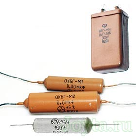
Рис. 6 - Внешний вид бумажных и металлобумажных конденсаторов
Разновидностью бумажных конденсаторов являются металлобумажные (типа К42, МБМ), у которых в качестве обкладок вместо фольги используют тонкую металлическую пленку, нанесенную на конденсаторную бумагу, благодаря чему уменьшаются габариты конденсатора. Металлобумажные конденсаторы обладают хорошим качеством электрической изоляции и повышенной удельной емкостью.
Бумажный конденсатор не имеет большую механическую прочность, поэтому его начинку помещают в металлический корпус, служащий механической основой его конструкции.
Электролитические конденсаторы
В электролитических конденсаторах, в отличии от бумажных, диэлектриком является тонкий слой оксида металла, образованный электрохимическим способом на положительной обложке из того же металла.
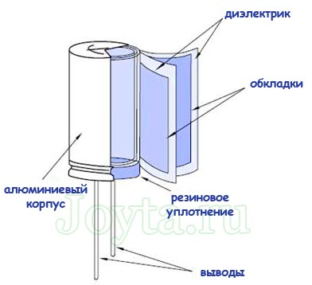
Рис. 7 - Устройство электролитического конденсатора
Вторую обложку представляет собой жидкий или сухой электролит. В качестве электролита используются концентрированные растворы кислот и щелочей. По конструктивным признакам эти конденсаторы делятся на четыре типа:
- жидкостные,
- сухие,
- оксидно-полупроводниковые,
- оксидно-металлические.
В жидкостных конденсаторах анод, выполненный в виде стержня, на поверхности которого создана оксидная пленка, погружен в жидкий электролит, находящийся в алюминиевом цилиндре. Для увеличения емкости анод делают объемно-пористым путем прессования порошка металла и спекания его при высокой температуре.
В сухих конденсаторах применяется вязкий электролит. В этом случае конденсатор, изготавливается из двух лент фольги (оксидированной и неоксидированной), между которыми размещается прокладка из бумаги или ткани, пропитанной электролитом. Фольга сворачивается в рулон и помещается в кожух. Выводы делаются от оксидированной фольги (анод) и не оксидированной (катод).
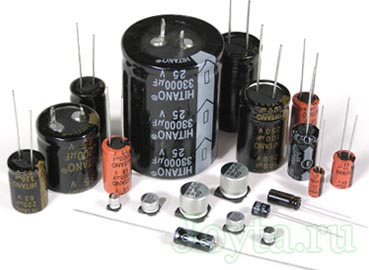
Рис. 8 - Внешний вид алюминиевых электролитических конденсаторов
В оксидно-полупроводниковых конденсаторах в качестве катода используется диоксид марганца. В оксидно-металлических функции катода выполняет металлическая пленка оксидного слоя.
Особенностью электролитических конденсаторов является их униполярность, т.е. они могут работать при подведении к аноду положительного потенциала, а к катоду - отрицательного. Поэтому их применяют в цепях пульсирующего напряжения, полярность которого не изменяется, например в фильтрах питания.
Электролитические конденсаторы обладают очень большой емкостью (до тысячи микрофарад) при сравнительно небольших габаритах. Но они не могут работать в высокочастотных цепях, так как из-за большого сопротивления электролита tgδ достигает значения 1,0.
Поскольку при низких температурах электролит замерзает, то в качестве параметра электролитических конденсаторов указывается минимальная температура, при которой допустима работа конденсатора. По допустимому значению отрицательной температуры электролитические конденсаторы делятся на четыре группы:
- Н (неморозостойкие, Тmin= -10 С);
- М ( морозостойкие, Tmin = -40 С);
- ПМ ( с повышенной морозостойкостью, Тmin = - 50 С);
- ОМ ( особоморозостойкие, Тmin = - 60 С).
При понижении температуры емкость конденсатора уменьшается, а при увеличении температуры - возрастает.
Материалом, создающим металлический электрод в электролитическом конденсаторе, может быть, в частности, алюминий и тантал.
Традиционно, на техническом жаргоне «электролитом» называют алюминиевые конденсаторы с жидким электролитом. В качестве положительного электрода используется алюминий. Диэлектрик представляет собой тонкий слой триоксида алюминия (Al2O3). Но, на самом деле, к электролитическим так же относятся и танталовые конденсаторы с твердым электролитом (реже встречаются с жидким электролитом). Почти все электролитические конденсаторы поляризованы, и поэтому они могут работать только в цепях с постоянным напряжением с соблюдением полярности.
В случае инверсии полярности, может произойти необратимая химическая реакция внутри конденсатора, ведущая к разрушению конденсатора, вплоть до его взрыва по причине выделяемого внутри него газа.
К электролитическим конденсаторам так же относится, так называемые, суперконденсаторы (ионисторы) обладающие электроемкостью, доходящей порой до нескольких тысяч Фарад.
Электролитические конденсаторы характеризуются высоким соотношением емкости к размеру: электролитические конденсаторы обычно имеют большие размеры, но конденсаторы другого типа, одинаковой емкости и напряжением пробоя были бы гораздо больше по размеру.
Электролитические конденсаторы имеют высокие токи утечки, умеренно низкое сопротивление и индуктивность.
В танталовых электролитических конденсаторах металлический электрод выполнен из тантала, а диэлектрический слой образован из пентаоксида тантала (Ta2O5).
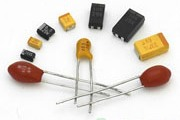
Рис. 9 - Внешний вид танталовых электролитических конденсаторов
Свойства:
- высокая устойчивость к внешнему воздействию,
- компактный размер: для небольших (от нескольких сотен микрофарад), размер сопоставим или меньше, чем у алюминиевых конденсаторов с таким же максимальным напряжением пробоя,
- меньший ток утечки по сравнению с алюминиевыми конденсаторами.
В отличие от обычных электролитических конденсаторов, современные твердотельные конденсаторы вместо оксидной пленки, используемой в качестве разделителя обкладок, имеют диэлектрик из полимера. Такой вид конденсатора не подвержен раздуванию и утечки заряда.
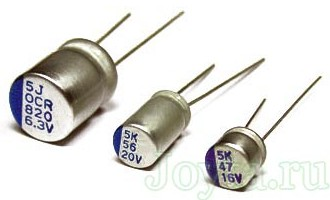
Рис. 10 - Внешний вид полимерных электролитических конденсаторов
Физические свойства полимера способствуют тому, что такие конденсаторы отличаются большим импульсным током, низким эквивалентным сопротивлением и стабильным температурным коэффициентом даже при низких температурах.
Полимерные конденсаторы могут заменять электролитические или танталовые конденсаторы во многих схемах, например, в фильтрах для импульсных блоков питания, или в преобразователях DC-DC.
Пленочные конденсаторы
В пленочных конденсаторах в качестве диэлектрика используются синтетические высокомолекулярные тонкие пленки, например, полиэстер (KT, MKT, MFT), полипропилен (KP, MKP, MFP) или поликарбонат (KC, MKC). Современная технология позволяет получить пленки, наименьшая толщина которых составляет 2 мкм, механическая прочность 1000 кг/см, а электрическая прочность достигает 300 кВ/мм. Такие свойства пленок позволяют создавать конденсаторы с очень малыми габаритами. Конструктивно они аналогичны бумажным конденсаторам и относятся к 7-й группе.
Конденсаторы типа К71 в качестве диэлектрика имеют полистирол. В конденсаторах типа К72 применен фторопласт, в конденсаторах К73 - поли-этилентерефталат. В конденсаторах К75 применено комбинированное сочетание полярных и неполярных пленок, что повышает их температурную стабильность.
В конденсаторах К76 в качестве диэлектрика применена тонкая лаковая пленка толщиной около 3 мкм, что существенно повышает их удельную емкость. Высокой величиной удельной емкости и температурной стабильностью обладают конденсаторы К77, в которых в качестве диэлектрика применен поликарбонат.
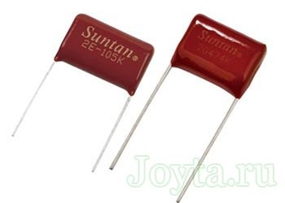
Рис. 11 - Внешний вид пленочных конденсаторов
В качестве обкладок в пленочных конденсаторах используют либо алюминиевую фольгу, либо напыленные на диэлектрическую пленку тонкие слои алюминия или цинка. Электроды могут быть напыленными на эту пленку (MKT, MKP, MKC) или изготовлены в виде отдельной металлической фольги, сматывающейся в рулон или спрессованной вместе с пленкой диэлектрика (KT, KP, KC). Современным материалом для пленки конденсаторов является полифениленсульфид (PPS). Корпус таких конденсаторов может быть как металлическим, так и пластмассовым и иметь цилиндрическую или прямоугольную форму.
Общие свойства пленочных конденсаторов (для всех видов диэлектриков):
- работают исправно при большом токе;
- имеют высокую прочность на растяжение;
- имеют относительно небольшую емкость;
- минимальный ток утечки;
- используется в резонансных цепях и в RC-снабберах.
Отдельные виды пленки отличаются:
- температурными свойствами (в том числе со знаком температурного коэффициента емкости, который является отрицательным для полипропилена и полистирола, и положительным для полиэстера и поликарбоната);
- максимальной рабочей температурой (от 125 °C, для полиэстера и поликарбоната, до 100 °C для полипропилена и 70 °С для полистирола);
- устойчивостью к электрическому пробою, и следовательно максимальным напряжением, которое можно приложить к определенной толщине пленки без пробоя.
Конденсаторы керамические
Этот вид конденсаторов изготавливают в виде одной пластины или пачки пластин из специального керамического материала. Металлические электроды напыляют на пластины и соединяют с выводами конденсатора. Конструкция может быть секционированной, трубчатой или дисковой. Керамические конденсаторы нетрудоемки в изготовлении и дешевы. Для изготовления конденсаторов применяется керамика с различными значениями диэлектрической проницаемости (ε > 8) и температурного коэффициента, который может быть как положительным, так и отрицательным. Численные значения ТКЕ лежат в пределах от - 2200·10-6 до +100·10-6 1/°C.
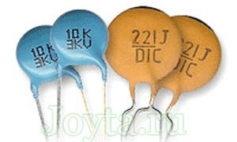
Рис. 12 - Внешний вид керамических конденсаторов
Используемые керамические материалы могут иметь очень разные свойства. Разнообразие включает в себя, прежде всего, широкий диапазон значений относительной электрической проницаемости (до десятков тысяч, и такая величина имеется только у керамических материалов).
Столь высокое значение проницаемости позволяет производить керамические конденсаторы (многослойные) небольших размеров, емкость которых может конкурировать с емкостью электролитических конденсаторов, и при этом работающих с любой поляризацией и характеризующихся меньшими утечками.
Керамические материалы характеризуются сложной и нелинейной зависимостью параметров от температуры, частоты, напряжения. В виду малого размера корпуса - данный вид конденсаторов имеет особую маркировку.
Промышленностью выпускается несколько разновидностей керамических конденсаторов:
- КЛГ-керамические литые герметизированные,
- КЛС - керамические литые секционированные,
- KM - керамические малогабаритные пакетные,
- КТ - керамические трубчатые,
- КТП - керамические трубчатые проходные,
- КО - керамические опорные,
- КДУ - керамические дисковые,
- КДО - керамические дисковые опорные,
- К10 - предназначены для использования в качестве компонентов микросхем и микросборок,
- К15 - могут работать при напряжениях более 1600 В.
Эти конденсаторы широко применяются в высокочастотных цепях. Применяя параллельное включение конденсаторов с разными знаками ТКЕ можно получить достаточно высокую стабильность результирующей емкости.
Слюдяные конденсаторы
Эти конденсаторы имеют пакетную конструкцию, в которой в качестве диэлектрика используются слюдяные пластинки толщиной от 0,02 до 0,06 мм, диэлектрическая проницаемость которых ε > 6, а тангенс угла потерь tgδ = 10-4. В соответствии с принятой в настоящее время маркировкой обозначаются К31. В РЭА применяются также ранее разработанные конденсаторы КСО - конденсаторы слюдяные спрессованные. Емкость этих конденсаторов лежит в пределах от 51 пф до 0,01 мкф. Слюдяные конденсаторы применяются в высокочастотных цепях.
Стеклянные, стеклокерамические и стеклоэмалевые конденсаторы
Эти конденсаторы, как и керамические, относятся к категории высокочастотных. Они состоят из тонких слоев диэлектрика, на которые нанесены тонкие металлические пленки. Для придания конструкции монолитности такой набор спекают при высокой температуре.
Конденсаторы обладают высокой теплостойкостью и могут работать при температурах до 300°С. Существуют три разновидности этих конденсаторов:
К21 - стеклянные,
К22 - стеклокерамические,
К23 - стеклоэмалевые.
Стеклокерамика имеет более высокую диэлектрическую проницаемость, чем стекло. Стеклоэмаль обладает более высокой электрической прочностью.
Конденсаторы переменной емкости
Емкость этих конденсаторов может плавно изменяться в процессе эксплуатации РЭА, например, для настройки колебательных контуров. Так же, как и подстроечный конденсатор, он состоит из статора и ротора, но в отличие от подстроечных количество роторных и статорных пластин велико, что необходимо для получения максимальной емкости порядка 500 пф. Как правило, эти конденсаторы имеют воздушный диэлектрик.
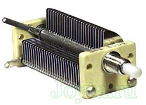
Рис. 13 - Конденсатор переменной емкости
На рис. 14 показано устройство трехсекционного конденсатора переменной емкости. Каждая секция служит для настройки своего колебательного контура. Такие конденсаторы применяются в радиоприемной аппаратуре. Конструктивной основой является корпус 4, содержащий валики крепления 7 и планку крепления 9, в котором размещены статорная и роторная секции. Статорная секция 5 изолирована от корпуса, а роторная секция 1 состоит из неразрезных (внутренних) пластин 11 и разрезных (внешних) пластин 10. Отгибая или подгибая часть сектора внешней пластины, можно изменять емкость в небольших пределах, что бывает необходимо в процессе заводской настройки аппаратуры. Роторные пластины закреплены на оси 2. Плавность вращения оси обеспечивается шариковым подшипником 3 и подпятником 8. На корпусе конденсатора около каждой роторной секции установлены специальные пружины - токосъемы 6, которые плотно прижимаются к ротору. Посредством токосъемов производится подключение роторных секций к соответствующим точкам схемы аппаратуры.
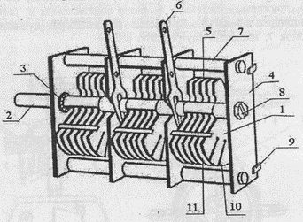
Рис. 14 - Устройство трехсекционного конденсатора переменной емкости
Подстроечные (полупеременные) конденсаторы.
Особенностью этих конденсаторов является то, что их емкость изменяется в процессе производства РЭА (регулировки), а в процессе эксплуатации емкость таких конденсаторов должна сохраняться постоянной и не изменяться под воздействием вибрации и ударов.
Они могут быть с воздушным или твердым диэлектриком. На рис. 15,а показано устройство подстроенного конденсатора с твердым диэлектриком типа КПК (конденсатор подстроечный керамический). Такой конденсатор состоит из основания 2 (статора) и вращающего диска 1 (ротора). На основание и диск напылены серебряные пленки полукруглой формы. При вращении ротора изменяется площадь перекрытия пленок, а следовательно, емкость конденсатора. Как правило, минимальная емкость (когда пленки не перекрыты) составляет несколько пикофарад, а при полном перекрытии пленок емкость конденсатора будет максимальной, величина этой емкости составляет несколько десятков пикофарад. От ротора и статора сделаны внешние выводы 3 и 4. Плотное прилегание ротора к статору обеспечивается прижимной пружиной 5.
На рис. 15,б показано устройство подстроечного конденсатора с воздушным диэлектриком. На керамическом основании 1 установлены колонки 2 для крепления пластин статора 3. Пластины ротора 4 закреплены на оси ротора 5. Посредствам пружины - токосъема 6 ротор подключается к соответствующим точкам принципиальной схемы. Крепление конденсатора осуществляется с помощью колонок 7, имеющих внутреннюю резьбу.
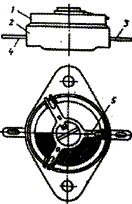 |
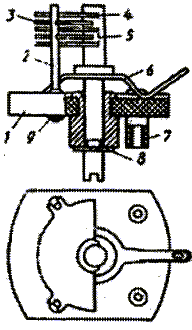 |
| а) | б) |
Рис. 15 - Устройство подстроечных конденсаторов
а - с твердым диэлектриком, б - с воздушным диэлектриком
Вариконды
Это конденсаторы, емкость которых зависит от напряженности электрического поля. Они выполняются на основе сегнетоэлектриков (титаната бария, стронция, кальция и т.д). Для них характерны высокие значения относительной диэлектрической проницаемости и ее сильная зависимость от напряженности электрического поля и температуры. Применяются вариконды как элементы настройки колебательных контуров. Если вариконд включить в цепь резонансного LC контура и изменять постоянное напряжение, подводимое к нему от источника, имеющего высокое внутренее сопротивление (оно необходимо для того, чтобы источник не ухудшал добротность колебательного контура), то можно изменять резонансную частоту этого контура.
Варикапы
Это конденсаторы, емкость которых изменяется за счет изменения расстояния между его обкладками путем подведения внешнего напряжения. Варикап - это одна из разновидностей полупроводникового диода, к которому подводится обратное напряжение, изменяющее емкость диода. Благодаря малым размерам, высокой добротности, стабильности и значительному изменению емкости варикапы нашли широкое применение в РЭА для настройки контуров и фильтров.